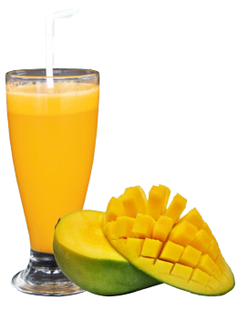

- Alpukat
- Mangga 
- Sirsak
- Jambu
- Jeruk
Jus alpukat adalah minuman yang dibuat dari daging alpukat yang dihaluskan dan dicampur dengan air atau susu.
Manfaat: Jus alpukat kaya akan lemak sehat, serat, vitamin (seperti vitamin K, E, dan beberapa vitamin B), serta mineral (seperti potassium dan magnesium) yang dapat meningkatkan kesehatan jantung, mendukung kesehatan kulit, dan memberikan energi.
Jus mangga adalah minuman yang terbuat dari buah mangga. Mangga yang digunakan ialah mangga yang sudah matang.
Jus mangga mengandung banyak vitamin C, vitamin A, serat, dan antioksidan. Manfaatnya meliputi meningkatkan sistem kekebalan tubuh, menjaga kesehatan mata, dan membantu pencernaan.
Jus sirsak adalah minuman yang dihasilkan dari ekstraksi buah sirsak yang memiliki rasa asam dan manis.
Manfaat: Jus sirsak mengandung senyawa-senyawa seperti acetogenins yang memiliki potensi untuk menghambat pertumbuhan sel kanker, serta berperan dalam meningkatkan sistem kekebalan tubuh dan mengatasi infeksi.

Jus jambu adalah minuman yang dibuat dari buah jambu biji yang dihaluskan dan diencerkan.
Jus jambu mengandung vitamin C, serat, dan beberapa mineral. Manfaatnya termasuk menjaga kesehatan pencernaan, mengendalikan gula darah, dan memperkuat sistem kekebalan tubuh.
Jus jeruk adalah minuman yang dihasilkan dari ekstraksi buah jeruk yang kaya akan rasa asam segar. Jus jeruk mengandung banyak vitamin C dan antioksidan.
Manfaatnya meliputi meningkatkan sistem kekebalan tubuh, mendukung kesehatan kulit, serta membantu penyerapan zat besi dari makanan.